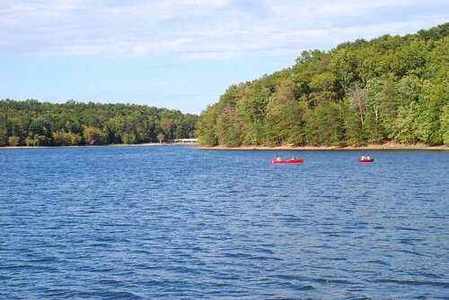

Honored Guests on the Menu

Bluegill
Jerry
5
The swimming hole at Fall Creek Falls State park
Cats

Channel Catfish
Tom
20
A little farther out from the swimming hole at Fall Creek Falls State park
Mice
Fishing Quote
“If people concentrated on the really important things in life, there’d be a shortage of fishing poles,”
Location

Fall Creek Falls State Park
Located on the western border of the Cumberland Plateau, Fall Creek Falls State Park in Tennessee is home to scenic vistas surrounding a mountain lake, gorges, streams and cascades, including one of the highest waterfalls east of the Rocky Mountains, at 256 feet. The natural beauty and recreational opportunities in the 25,000-acre park earned Fall Creek Falls the title of best state park in the Southeast according to “Southern Living" magazine.